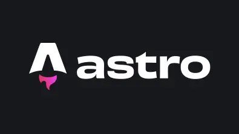
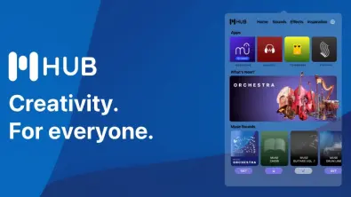

Audacity is the world's most popular audio editing and recording app
Produce music. Produce podcasts. Take total control of your sound.
More about our new release
Record anything
Excellent for podcasts, voice-over work or even just recording memos.
Get free web space for your audio files
Host and share your audio instantly using our sister serviceaudio.com.
All you need to create
Cross-platform
Runs on all major operating systems – Windows, MacOS and Linux.
Import, export, convert
Audacity supports all major audio formats, allowing you to convert WAV to MP3, FLAC, Ogg and much more.
Plugin support
Elevate your productions with a vast selection of third-party plugins, including VST3, Nyquist and more.
Deep audio analysis
Visualize frequencies in Audacity's Spectogram view or use scientific Vamp analyzers to make discoveries.
New from our blog
Audacity 3.4
Audacity 3.4 adds a musical view, time stretching and a new exporter.
Our new website
We've been working on a new website Audacity and here it is!
Introducing Muse Hub
Muse Hub is your gateway to creativity.
Audacity is free, forever
Popular in the FAQ
What is Audacity?
Audacity is the world’s most popular free software for recording and editing audio. So if you're producing music, a podcast, or just playing around with audio, Audacity is for you.
Who is Audacity for?
Audacity is for anyone who wants to get creative with sound. It’s also the perfect tool for anyone who needs to quickly edit or export audio, for any reason.
Is Audacity free?
Yes! Audacity has always been and will always remain free for everyone.
Is Audacity open source?
Audacity is proudly open source. This means its source code remains
open to anyone to view or modify.
A dedicated worldwide community
of passionate audio lovers have collaborated to make Audacity the well-loved
software it is today. Many third-party plugins have also been developed
for Audacity thanks to its open source nature.